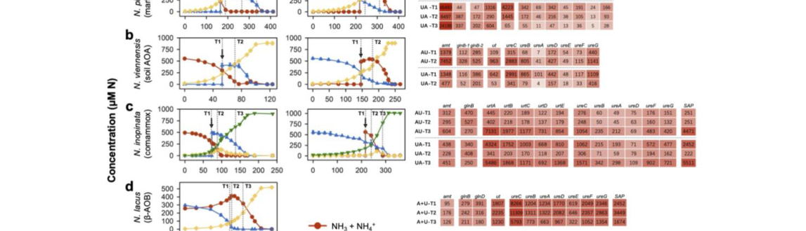

ureC1 encodes the urease alpha catalytic subunit NVIE_014740 in Nitrososphaera viennensis EN76. It hydrolyzes imported urea intracellularly, supplying ammonia/ammonium for nitrogen metabolism and ammonia oxidation when urea is available.
| GO Term | Evidence | Action | Reason |
|---|---|---|---|
|
GO:0009039
urease activity
|
IEA
GO_REF:0000120 |
ACCEPT |
Summary: ACCEPT. UreC is the catalytic alpha subunit of urease, EC 3.5.1.5.
Reason: The UniProt record names ureC1 as urease subunit alpha and assigns EC 3.5.1.5. NCBIfam TIGR01792 and PANTHER PTHR43440 support conserved urease alpha-subunit function. Falcon research also found organism-specific literature mapping NVIE_014740 to the regulated EN76 urease locus.
Supporting Evidence:
file:9ARCH/ureC1/ureC1-uniprot.txt
RecName: Full=Urease subunit alpha; EC=3.5.1.5.
file:9ARCH/ureC1/ureC1-uniprot.txt
NCBIfam; TIGR01792; urease_alph; 1.
file:9ARCH/ureC1/ureC1-deep-research-falcon.md
Recent EN76 literature explicitly identifies ureC/NVIE_014740 as the urease alpha subunit in a urea transporter-urease operon.
|
|
GO:0016151
nickel cation binding
|
IEA
GO_REF:0000120 |
ACCEPT |
Summary: ACCEPT. Urease is a nickel metalloenzyme, so nickel binding is expected.
Reason: Nickel binding is part of the urease catalytic mechanism. The UniProt record explicitly states that the enzyme binds two nickel ions per subunit. Family research notes that rare iron ureases exist, so nickel binding should be supported by gene-specific evidence rather than propagated blindly from urease-family membership.
Supporting Evidence:
file:9ARCH/ureC1/ureC1-uniprot.txt
Binds 2 nickel ions per subunit.
file:interpro/panther/PTHR43440/PTHR43440-deep-research-falcon.md
PTHR43440 family research supports nickel-dependent urease annotations for canonical UreC homologs with explicit Ni-binding evidence, while warning that iron urease paralogs make blanket nickel propagation unsafe.
|
|
GO:0016787
hydrolase activity
|
IEA
GO_REF:0000120 |
KEEP AS NON CORE |
Summary: KEEP_AS_NON_CORE. Correct but less informative than urease activity.
Reason: Urease is a hydrolase, but this parent term is less informative than GO:0009039 urease activity and should not be treated as the core MF.
Supporting Evidence:
file:9ARCH/ureC1/ureC1-uniprot.txt
RecName: Full=Urease subunit alpha; EC=3.5.1.5.
|
|
GO:0016810
hydrolase activity, acting on carbon-nitrogen (but not peptide) bonds
|
IEA
GO_REF:0000002 |
KEEP AS NON CORE |
Summary: KEEP_AS_NON_CORE. Correct parent activity for urease, but the specific urease activity is the core molecular function.
Reason: This parent C-N hydrolase term is technically consistent with urease chemistry, but GO:0009039 is the supported specific activity.
Supporting Evidence:
file:9ARCH/ureC1/ureC1-uniprot.txt
RecName: Full=Urease subunit alpha; EC=3.5.1.5.
|
|
GO:0019627
urea metabolic process
|
IEA
GO_REF:0000104 |
ACCEPT |
Summary: ACCEPT. Urease directly metabolizes urea.
Reason: ureC1 encodes the catalytic urease subunit, so urea metabolic process is a direct biological-process annotation, not merely pathway context. In EN76, urea utilization is regulated by nitrogen source and ureC/ut transcripts respond to urea versus ammonia.
Supporting Evidence:
file:9ARCH/ureC1/ureC1-uniprot.txt
PATHWAY: Nitrogen metabolism; urea degradation; CO(2) and NH(3) from urea (urease route): step 1/1.
file:interpro/panther/PTHR43440/PTHR43440-deep-research-falcon.md
Family research identifies canonical UreC/large-subunit ureases as the catalytic subunits for urea hydrolysis, supporting urea catabolism for conserved UreC proteins.
file:9ARCH/ureC1/ureC1-deep-research-falcon.md
In N. viennensis EN76, ut and ureC/NVIE_014740 transcripts change about tenfold after urea versus ammonia addition, supporting regulated urea utilization by this locus.
|
|
GO:0043419
urea catabolic process
|
IEA
GO_REF:0000041 |
ACCEPT |
Summary: ACCEPT. The UniPathway annotation is specific and useful for this nitrogen-metabolism gene: ureC1 is a urease catalytic subunit that directly catalyzes urea degradation.
Reason: UniPathway adds the correct process for the catalytic reaction. Urease hydrolyzes urea to ammonium and hydrogencarbonate/CO2, making urea catabolism direct rather than regulatory or downstream context. The Falcon report further supports intracellular urea hydrolysis rather than an extracellular urease model for EN76.
Supporting Evidence:
file:9ARCH/ureC1/ureC1-uniprot.txt
PATHWAY: Nitrogen metabolism; urea degradation; CO(2) and NH(3) from urea (urease route): step 1/1.
file:9ARCH/ureC1/ureC1-deep-research-falcon.md
Culture studies found no extracellular urease activity and no secretion signal context for the urease genes, supporting intracellular urea catabolism in ammonia-oxidizing archaea including EN76.
|
The research report should be a detailed narrative explaining the function, biological processes, and localization of the gene product. Citations should be given for all claims.
You should prioritize authoritative reviews and primary scientific literature when conducting research. You can supplement
this with annotations you find in gene/protein databases, but these can be outdated or inaccurate.
We are specifically interested in the primary function of the gene - for enzymes, what reaction is catalyzed, and what is the substrate specificity? For transporters, what is the substrate? For structural proteins or adapters, what is the broader structural role? For signaling molecules, what is the role in the pathway.
We are interested in where in or outside the cell the gene product carries out its function.
We are also interested in the signaling or biochemical pathways in which the gene functions. We are less interested in broad pleiotropic effects, except where these elucidate the precise role.
Include evidence where possible. We are interested in both experimental evidence as well as inference from structure, evolution, or bioinformatic analysis. Precise studies should be prioritized over high-throughput, where available.
The UniProt target (A0A060HK93) corresponds to the urease alpha (catalytic) subunit in the soil ammonia-oxidizing archaeon Nitrososphaera viennensis EN76, with locus tag NVIE_014740 (gene symbol ureC/ureC1). In recent primary literature, ureC (NVIE_014740) is explicitly annotated as the urease alpha subunit in N. viennensis, and it is reported to be in the same operon as a urea transporter gene (ut; NVIE_014780), matching the UniProt-provided ORF name and functional description. (qin2024ammoniaoxidizingbacteriaand pages 8-11, qin2023differentialsubstrateaffinity pages 10-13)
Earlier genomic characterization of strain EN76 also identified a contig containing a “potential urease operon”/“urease gene cluster,” supporting the presence of a urease system in this specific organism (and not a different ureC from bacteria or other archaea). (tourna2011nitrososphaeraviennensisan pages 2-3, tourna2011nitrososphaeraviennensisan pages 3-4)
Urease is the enzyme that hydrolyzes urea; ureC (urease subunit alpha) encodes the catalytic subunit (often used as the functional marker gene “ureC” in environmental studies). In N. viennensis EN76, ureC1 (NVIE_014740) is part of the genetic capacity for urea utilization, which supplies intracellular ammonia that can support both biosynthesis and ammonia oxidation-derived energy metabolism in ammonia-oxidizing archaea (AOA). (qin2024ammoniaoxidizingbacteriaand pages 8-11, tourna2011nitrososphaeraviennensisan pages 3-4)
Cultured AOA, including N. viennensis, can use urea such that urea hydrolysis in the cytoplasm releases ammonia that is then oxidized (and/or assimilated). Evidence supporting the intracellular coupling is that, across tested ammonia oxidizers including N. viennensis, extracellular urease activity was not detected and urease genes lacked secretion signals, supporting a model where urea is transported into the cell and hydrolyzed internally. (qin2023differentialsubstrateaffinity pages 4-7, qin2023differentialsubstrateaffinity pages 7-10)
Although the reaction chemistry is not explicitly written in the extracted text, the physiological and kinetic measurements directly establish that N. viennensis couples urea use to nitrification, and that urea is a secondary/less-preferred substrate relative to ammonia.
In N. viennensis EN76, measured apparent affinities show:
- Km(app) for ammonia oxidation: 0.68 ± 0.16 µM
- Km(app) for urea-dependent oxidation: 8.97 ± 1.27 µM
This indicates substantially lower affinity for urea (and ~10-fold lower specific affinity) than for ammonia. (qin2024ammoniaoxidizingbacteriaand pages 8-11, qin2023differentialsubstrateaffinity pages 7-10, qin2024ammoniaoxidizingbacteriaand media 2caafcb9)
These organism-specific kinetic parameters are critical for functional annotation because they constrain when ureC1-mediated urea use is likely to contribute in situ (e.g., when urea is available and ammonia is scarce). (qin2024ammoniaoxidizingbacteriaand pages 8-11, qin2024ammoniaoxidizingbacteriaand media 2caafcb9)
In N. viennensis, ureC (NVIE_014740) is reported to be located in the same operon as a urea transporter gene ut (NVIE_014780), supporting a linked import + hydrolysis module for urea utilization. (qin2024ammoniaoxidizingbacteriaand pages 8-11, qin2023differentialsubstrateaffinity pages 10-13)
Comparative genomics across nitrifiers indicates that AOA commonly encode urease structural genes (ureABC) plus accessory genes (ureDEFG), and they typically use archaeal-type urea transporters (e.g., dur3, utp/ut) rather than the bacterial high-affinity ABC transporter urtABCDE. This context supports that Nitrososphaera spp. (Group I.1b AOA, including N. viennensis) generally have the full intracellular machinery for urea uptake and urease activation. (liu2023genomicinsightinto pages 9-11, liu2023genomicinsightinto pages 1-2)
Multiple complementary observations show that ureC1-linked urea use is regulated by nitrogen source:
1) Transcriptomics (24 h after substrate switch): In N. viennensis, transcripts of ut and ureC (NVIE_014740) changed by ~tenfold in response to urea vs ammonia addition, indicating a strongly inducible operon responsive to N source. (qin2024ammoniaoxidizingbacteriaand pages 8-11, qin2023differentialsubstrateaffinity pages 10-13)
2) Physiology / microrespirometry: When urea-grown N. viennensis cells were amended with low urea (10–20 µM) or ammonia (20–40 µM), O2 consumption responded immediately; however, when ammonia-grown cells were given 10 µM urea, there was no immediate O2 uptake for hours after ammonia depletion, consistent with repression of urea utilization during ammonia-based growth and a required adaptation period. (qin2024ammoniaoxidizingbacteriaand pages 55-58)
3) Mechanistic interpretation: The broader experimental framework supports that ammonia oxidizers can repress oxidation of extracellular ammonia when cytoplasmic urea hydrolysis satisfies N needs, consistent with regulated coupling between transport and downstream oxidation. (qin2023differentialsubstrateaffinity pages 7-10, qin2024ammoniaoxidizingbacteriaand pages 11-16)
Direct evidence supports cytoplasmic/intracellular localization of the urease system in N. viennensis and related ammonia oxidizers:
- No extracellular urease activity was detected for tested ammonia oxidizers including N. viennensis.
- Urease genes lacked signal peptides and urease operons were not flanked by secretion-system genes.
Together, these observations support that ureC1 (urease alpha subunit) acts inside the cell, consistent with an intracellular urea-to-ammonia conversion that then feeds ammonia oxidation/assimilation. (qin2023differentialsubstrateaffinity pages 4-7, qin2023differentialsubstrateaffinity pages 7-10)
Initial genome-based characterization suggested N. viennensis EN76 “might be able to use urea instead of ammonia as sole energy source,” indicating ureC1 supports metabolic flexibility in soil environments. (tourna2011nitrososphaeraviennensisan pages 3-4)
At the single-cell level, isotopic measurements show urea is used mainly as an N source rather than a major C source: for N. viennensis, urea-derived carbon incorporation was very low (~0.1% during ammonia growth and 0.5–1.1% after urea depletion), while bicarbonate-derived carbon incorporation remained much higher, consistent with chemoautotrophic carbon fixation dominating. (qin2024ammoniaoxidizingbacteriaand pages 58-62)
Recent (2023–2024) ecosystem studies highlight how ureC/urease capacity shapes archaeal nitrifier niches:
Soils: Across major soil Nitrososphaeria lineages, 85.7–89.8% of AOA in surveyed soils were estimated to encode urease (based on ureC relative to amoA/rpoB), suggesting that urea utilization potential is widespread among soil archaeal nitrifiers related to Nitrososphaera. (liu2023genomicinsightinto pages 1-2)
Dark ocean: Quantitative metagenomic and rate measurements indicate urea is a major N source below the photic zone. UreC prevalence was estimated at 39% of deep-sea cells in one region, and 10–46% globally; on average 25% of deep-sea cells assimilated urea-derived N (or 60% of detectably active cells). Urea concentrations ranged 21 nM–1.1 µM, and urea-based nitrification could be comparable to ammonia-based nitrification at some depths/sites. (arandiagorostidi2024ureaassimilationand pages 1-2, arandiagorostidi2024ureaassimilationanda pages 8-13, arandiagorostidi2024ureaassimilationanda pages 17-20)
Quantitative nitrification example: At 150 m depth in one dataset, nitrification product accumulation reached 16.1 nmol N L−1 from ammonium and 11.8 nmol N L−1 from urea incubations, and urea-based nitrification rates were reported as statistically indistinguishable from ammonia-based rates (t-test > 0.1). (arandiagorostidi2024ureaassimilationanda pages 8-13)
These data support the interpretation that ureC-like systems, including those in Nitrososphaeria, can materially contribute to nitrogen cycling under certain substrate regimes, even if ammonia remains the preferred substrate in many settings. (arandiagorostidi2024ureaassimilationanda pages 8-13, qin2024ammoniaoxidizingbacteriaand pages 8-11)
A key 2024 synthesis from controlled cultures is that ammonia-oxidizing archaea and bacteria differ in nitrogen-source preference strategies. For N. viennensis, this includes: (i) higher affinity for ammonia than urea, (ii) inducible ut–ureC expression, and (iii) physiological repression of urea use during ammonia growth—features that collectively support niche differentiation and help explain coexistence patterns where multiple nitrifiers share environments but exploit different nitrogen pools over time. (qin2024ammoniaoxidizingbacteriaand pages 8-11, qin2024ammoniaoxidizingbacteriaand pages 55-58)
From a genomic/evolutionary perspective, a 2023 comparative genomics analysis argues urea is the most widely encoded LDON substrate among nitrifiers and that AOA urea metabolic genes (including ureC and certain transporters) show evolutionary patterns consistent with archaeal-specific trajectories and/or lateral gene transfer for some transport components. This supports ongoing research emphasis on transport and regulation as central determinants of urea utilization efficiency. (liu2023genomicinsightinto pages 1-2)
Because ureC is a widely used marker for urease potential, quantitative evidence that ureC is present in large fractions of deep-sea cells (10–46% globally) and that urea assimilation can involve ~25% of deep-sea cells supports incorporating urea-driven processes into models of ocean nitrogen cycling and chemoautotrophic production. (arandiagorostidi2024ureaassimilationand pages 1-2, arandiagorostidi2024ureaassimilationanda pages 8-13)
Similarly, soil results indicating 85.7–89.8% of AOA in diverse soils encode urease suggest ureC-based functional profiling is useful for predicting archaeal nitrogen acquisition strategies and niche partitioning in terrestrial ecosystems, including those influenced by fertilizer-derived urea. (liu2023genomicinsightinto pages 1-2)
Recent field observations caution that ureC abundance does not always predict urea oxidation rates. For example, Southern Ocean work reported variable Thaumarchaeota ureC abundance (highest mean 1.2 × 10^6 copies L−1 in one water mass) but found urea oxidation rates generally lower than ammonia oxidation and not well correlated with marker gene ratios, indicating regulation and community context must be considered in applications that infer function from gene abundance alone. (hollibaugh2023contributionofurean pages 14-18)
The following tables compile organism-specific ureC1 evidence and 2023–2024 quantitative developments with URLs and publication dates.
| Claim/Topic | Key findings (include quantitative values) | Evidence type | Source (full citation short) | Publication date | URL |
|---|---|---|---|---|---|
| Target identity verification | In Nitrososphaera viennensis EN76, ureC / NVIE_014740 is explicitly identified as the urease alpha subunit; it is reported in the same operon as a urea transporter gene ut / NVIE_014780, matching UniProt A0A060HK93 annotation (qin2024ammoniaoxidizingbacteriaand pages 8-11, qin2023differentialsubstrateaffinity pages 10-13) | Transcriptomics / genome-linked annotation | Qin et al., Nat Microbiol | Jan 2024 | https://doi.org/10.1038/s41564-023-01593-7 |
| Primary function and substrate preference in EN76 | N. viennensis uses urea as an alternative N/energy source precursor but prefers ammonia over urea: apparent Km(app) for ammonia 0.68 ± 0.16 µM versus urea 8.97 ± 1.27 µM; specific affinity for urea is ~10-fold lower than for ammonia (qin2024ammoniaoxidizingbacteriaand pages 8-11, qin2023differentialsubstrateaffinity pages 7-10, qin2024ammoniaoxidizingbacteriaand media 2caafcb9) | Culture kinetics | Qin et al., Nat Microbiol | Jan 2024 | https://doi.org/10.1038/s41564-023-01593-7 |
| Regulation of ureC1 by nitrogen source | After substrate switching, ut and ureC (NVIE_014740) transcripts changed by about 10-fold within 24 h: induced after urea addition and reduced after ammonia addition; by contrast amt1 remained similar (1,379 TPM on ammonia vs 1,348 TPM on urea; P = 0.84) (qin2024ammoniaoxidizingbacteriaand pages 8-11, qin2023differentialsubstrateaffinity pages 10-13) | Transcriptomics | Qin et al., Nat Microbiol | Jan 2024 | https://doi.org/10.1038/s41564-023-01593-7 |
| Physiological switching behavior | Urea-grown EN76 showed immediate O2 consumption when low urea (10–20 µM) or ammonia (20–40 µM) was added, but ammonia-grown cells given 10 µM urea showed no immediate O2 uptake until after ammonia depletion, indicating repression of urea use during ammonia growth; EN76 maintained growth without a pronounced lag during transition (qin2024ammoniaoxidizingbacteriaand pages 55-58) | Physiology / microrespirometry | Qin et al., Nat Microbiol | Jan 2024 | https://doi.org/10.1038/s41564-023-01593-7 |
| Cellular role of urea in EN76 | NanoSIMS-based single-cell data indicate AOM use urea mainly as an N source rather than C source; in soil AOA N. viennensis, urea-derived C was only ~0.1% during ammonia growth, increasing to 0.5–1.1% after urea depletion, while bicarbonate-derived C remained much larger (13 ± 4.5% → 8.0 ± 3.5%) (qin2024ammoniaoxidizingbacteriaand pages 58-62) | Single-cell isotope tracing | Qin et al., Nat Microbiol | Jan 2024 | https://doi.org/10.1038/s41564-023-01593-7 |
| Localization of urease system | Across tested ammonia oxidizers including EN76, no extracellular urease activity was detected; no signal peptides were found in urease genes and no nearby secretion-system genes were found, supporting cytoplasmic localization of urease/ureC1 (qin2023differentialsubstrateaffinity pages 4-7) | Enzyme assay + comparative genomics | Qin et al., bioRxiv | Aug 2023 | https://doi.org/10.1101/2023.08.04.551995 |
| Broader AOA genomic context | Review/genomic survey of 70 nitrifier genomes found urea to be the most commonly encoded LDON substrate; AOA generally carry ureABC plus ureDEFG and use archaeal transporter types dur3 and/or utp rather than bacterial urtABCDE; experimental urea use is confirmed for N. viennensis EN76 (liu2023genomicinsightinto pages 9-11, liu2023genomicinsightinto pages 1-2) | Comparative genomics / review | Liu et al., Front Microbiol | Dec 2023 | https://doi.org/10.3389/fmicb.2023.1273211 |
| Initial discovery of urease capacity in EN76 | Draft genome of EN76 contained a contig with a potential urease operon/urease gene cluster, leading the authors to propose that this soil AOA could use urea instead of ammonia as sole energy source; this provided the first genome-based indication for ureC1 function in this organism (tourna2011nitrososphaeraviennensisan pages 3-4, tourna2011nitrososphaeraviennensisan pages 2-3) | Genomics / culture characterization | Tourna et al., PNAS | Apr 2011 | https://doi.org/10.1073/pnas.1013488108 |
| Soil archaeal prevalence of urease potential | Across 12 major soil Nitrososphaeria lineages, 85.7–89.8% of AOA in surveyed soils were estimated to encode urease (based on ureC relative to amoA/rpoB), indicating urea use is widespread among soil archaeal nitrifiers related to Nitrososphaera (liu2023genomicinsightinto pages 1-2) | Soil metagenomics / expression-focused ecology | Zhao et al., ISME J | Aug 2023 | https://doi.org/10.1038/s41396-023-01493-y |
| Environmental significance of archaeal ureC | In dark-ocean metagenomes, ureC occurred in 39% of deep-sea cells regionally and 10–46% globally (median ~36%); on average 25% of deep-sea cells assimilated urea-derived N (or 60% of active cells), and urea-based nitrification occurred at all sampled depths at one site (arandiagorostidi2024ureaassimilationanda pages 13-17, arandiagorostidi2024ureaassimilationand pages 1-2, arandiagorostidi2024ureaassimilationanda pages 17-20, arandiagorostidi2024ureaassimilationanda pages 8-13) | Environmental metagenomics + rates | Arandia-Gorostidi et al., ISME J | Jan 2024 | https://doi.org/10.1093/ismejo/wrae230 |
| Quantitative urea contribution to marine nitrification | Southern Ocean data showed Thaumarchaeota-associated ureC abundance was variable (highest mean 1.2 × 10^6 copies L^-1 in CDW); mean ureC/rrs ~0.14 overall. Ammonia oxidation averaged 10.9 nmol L^-1 d^-1 versus urea oxidation 2.6 nmol L^-1 d^-1 (or 1.5 excluding outliers), suggesting urea makes a significant but smaller, context-dependent contribution to nitrification (hollibaugh2023contributionofurean pages 14-18) | Environmental rates + qPCR/metagenetics | Hollibaugh et al., preprint/2023 study | 2023 | URL not available in retrieved context |
Table: This table compiles organism-specific and ecosystem-level evidence relevant to ureC1 (NVIE_014740) in Nitrososphaera viennensis EN76, emphasizing verified identity, biochemical role, regulation, localization, and recent quantitative findings from 2023–2024 literature.
| Study/system | Key quantitative results | Implication/application | Publication date | URL |
|---|---|---|---|---|
| Qin et al. 2024 — Nitrososphaera viennensis EN76 culture physiology and regulation | In N. viennensis, ureC (NVIE_014740) and adjacent ut (NVIE_014780) transcripts changed by ~10-fold within 24 h after switching between urea and ammonia; apparent substrate affinities showed Km(app) ammonia = 0.68 ± 0.16 µM versus Km(app) urea = 8.97 ± 1.27 µM, with ~10-fold lower specific affinity for urea; ammonia-grown cells given 10 µM urea showed no immediate O2 uptake until ammonia depletion, indicating repression of urea use during ammonia growth (qin2024ammoniaoxidizingbacteriaand pages 8-11, qin2024ammoniaoxidizingbacteriaand pages 55-58, qin2024ammoniaoxidizingbacteriaand media 2caafcb9) | Shows that urease-linked urea oxidation in soil AOA is inducible but typically secondary to ammonia use; useful for modeling nitrogen-source competition in soils and bioreactors and for interpreting ureC expression as a condition-dependent, not constitutive, marker | Jan 2024 | https://doi.org/10.1038/s41564-023-01593-7 |
| Zhao et al. 2023 — soil Nitrososphaeria resource acquisition | Across 12 major soil Nitrososphaeria lineages, 85.7–89.8% of AOA in surveyed soils were estimated to encode urease based on ureC relative to amoA/rpoB reads (liu2023genomicinsightinto pages 1-2) | Indicates that urea use is a widespread niche-defining trait in soil archaeal nitrifiers, supporting application of ureC-based analyses in predicting nitrogen acquisition strategies and coexistence patterns in agricultural and natural soils | Aug 2023 | https://doi.org/10.1038/s41396-023-01493-y |
| Arandia-Gorostidi et al. 2024 — dark ocean urea assimilation and nitrification | Regional deep-sea metagenomes estimated ureC in 39% of cells; global datasets estimated 10–46% of deep-sea cells carry ureC (median ~36%); on average 25% of deep-sea cells assimilated urea-derived N, or 60% of detectably active cells; urea concentrations ranged 21 nM–1.1 µM; peak nitrification at 150 m reached 16.1 nmol N L^-1 from ammonium and 11.8 nmol N L^-1 from urea; urea-based nitrification rates were statistically indistinguishable from ammonia-based rates at sampled depths; urea-supported chemoautotrophic C fixation was estimated at 1.4–8.8 mg C m^-2 d^-1, ~5–7% of sinking POC at study sites (arandiagorostidi2024ureaassimilationanda pages 13-17, arandiagorostidi2024ureaassimilationand pages 1-2, arandiagorostidi2024ureaassimilationanda pages 17-20, arandiagorostidi2024ureaassimilationanda pages 8-13) | Demonstrates that ureC-bearing archaeal and bacterial communities substantially support deep-ocean N cycling and some chemoautotrophic production; relevant to ocean biogeochemical models and to interpreting ureC as an ecologically important marker beyond surface waters | Jan 2024 | https://doi.org/10.1093/ismejo/wrae230 |
| Hollibaugh et al. 2024 preprint / 2023 Southern Ocean study — polar nitrification | Thaumarchaeota-associated ureC abundance was variable by water mass, with highest mean 1.2 × 10^6 copies L^-1 in CDW; mean ureC/rrs ≈ 0.14 overall; ammonia oxidation averaged 10.9 nmol L^-1 d^-1 versus urea oxidation 2.6 nmol L^-1 d^-1 (or 1.5 nmol L^-1 d^-1 excluding high outliers); AO and UO differed significantly among water masses (p = 0.008) (hollibaugh2023contributionofurean pages 14-18) | Suggests urea contributes a measurable but generally smaller share of nitrification in polar waters; useful for constraining regional nitrogen-cycle budgets and for evaluating when ureC abundance does or does not predict active urea-based nitrification | Feb 2024 preprint / 2023 study | https://doi.org/10.1101/2024.02.20.581251 |
Table: This table summarizes key 2023–2024 quantitative findings on ureC/urease and urea-based nitrification or assimilation in archaeal nitrifiers across culture, soil, and ocean systems. It highlights the most useful recent statistics for functional interpretation and environmental application.
References
(qin2024ammoniaoxidizingbacteriaand pages 8-11): Wei Qin, Stephany P. Wei, Yue Zheng, Eunkyung Choi, Xiangpeng Li, Juliet Johnston, Xianhui Wan, Britt Abrahamson, Zachary Flinkstrom, Baozhan Wang, Hanyan Li, Lei Hou, Qing Tao, Wyatt W. Chlouber, Xin Sun, Michael Wells, Long Ngo, Kristopher A. Hunt, Hidetoshi Urakawa, Xuanyu Tao, Dongyu Wang, Xiaoyuan Yan, Dazhi Wang, Chongle Pan, Peter K. Weber, Jiandong Jiang, Jizhong Zhou, Yao Zhang, David A. Stahl, Bess B. Ward, Xavier Mayali, Willm Martens-Habbena, and Mari-Karoliina H. Winkler. Ammonia-oxidizing bacteria and archaea exhibit differential nitrogen source preferences. Nature microbiology, 9:524-536, Jan 2024. URL: https://doi.org/10.1038/s41564-023-01593-7, doi:10.1038/s41564-023-01593-7. This article has 122 citations and is from a highest quality peer-reviewed journal.
(qin2023differentialsubstrateaffinity pages 10-13): Wei Qin, Stephany P. Wei, Yue Zheng, Eunkyung Choi, Xiangpeng Li, Juliet Johnston, Xianhui Wan, Britt Abrahamson, Zachary Flinkstrom, Baozhan Wang, Hanyan Li, Lei Hou, Qing Tao, Wyatt W. Chlouber, Xin Sun, Michael Wells, Long Ngo, Kristopher A. Hunt, Hidetoshi Urakawa, Xuanyu Tao, Dongyu Wang, Xiaoyuan Yan, Dazhi Wang, Chongle Pan, Peter K. Weber, Jiandong Jiang, Jizhong Zhou, Yao Zhang, David A. Stahl, Bess B. Ward, Xavier Mayali, Willm Martens-Habbena, and Mari-Karoliina H. Winkler. Differential substrate affinity and catabolite repression enable preferential use of urea by ammonia-oxidizing bacteria. bioRxiv, Aug 2023. URL: https://doi.org/10.1101/2023.08.04.551995, doi:10.1101/2023.08.04.551995. This article has 1 citations.
(tourna2011nitrososphaeraviennensisan pages 2-3): Maria Tourna, Michaela Stieglmeier, Anja Spang, Martin Könneke, Arno Schintlmeister, Tim Urich, Marion Engel, Michael Schloter, Michael Wagner, Andreas Richter, and Christa Schleper. Nitrososphaera viennensis, an ammonia oxidizing archaeon from soil. Proceedings of the National Academy of Sciences, 108:8420-8425, Apr 2011. URL: https://doi.org/10.1073/pnas.1013488108, doi:10.1073/pnas.1013488108. This article has 1117 citations and is from a highest quality peer-reviewed journal.
(tourna2011nitrososphaeraviennensisan pages 3-4): Maria Tourna, Michaela Stieglmeier, Anja Spang, Martin Könneke, Arno Schintlmeister, Tim Urich, Marion Engel, Michael Schloter, Michael Wagner, Andreas Richter, and Christa Schleper. Nitrososphaera viennensis, an ammonia oxidizing archaeon from soil. Proceedings of the National Academy of Sciences, 108:8420-8425, Apr 2011. URL: https://doi.org/10.1073/pnas.1013488108, doi:10.1073/pnas.1013488108. This article has 1117 citations and is from a highest quality peer-reviewed journal.
(qin2023differentialsubstrateaffinity pages 4-7): Wei Qin, Stephany P. Wei, Yue Zheng, Eunkyung Choi, Xiangpeng Li, Juliet Johnston, Xianhui Wan, Britt Abrahamson, Zachary Flinkstrom, Baozhan Wang, Hanyan Li, Lei Hou, Qing Tao, Wyatt W. Chlouber, Xin Sun, Michael Wells, Long Ngo, Kristopher A. Hunt, Hidetoshi Urakawa, Xuanyu Tao, Dongyu Wang, Xiaoyuan Yan, Dazhi Wang, Chongle Pan, Peter K. Weber, Jiandong Jiang, Jizhong Zhou, Yao Zhang, David A. Stahl, Bess B. Ward, Xavier Mayali, Willm Martens-Habbena, and Mari-Karoliina H. Winkler. Differential substrate affinity and catabolite repression enable preferential use of urea by ammonia-oxidizing bacteria. bioRxiv, Aug 2023. URL: https://doi.org/10.1101/2023.08.04.551995, doi:10.1101/2023.08.04.551995. This article has 1 citations.
(qin2023differentialsubstrateaffinity pages 7-10): Wei Qin, Stephany P. Wei, Yue Zheng, Eunkyung Choi, Xiangpeng Li, Juliet Johnston, Xianhui Wan, Britt Abrahamson, Zachary Flinkstrom, Baozhan Wang, Hanyan Li, Lei Hou, Qing Tao, Wyatt W. Chlouber, Xin Sun, Michael Wells, Long Ngo, Kristopher A. Hunt, Hidetoshi Urakawa, Xuanyu Tao, Dongyu Wang, Xiaoyuan Yan, Dazhi Wang, Chongle Pan, Peter K. Weber, Jiandong Jiang, Jizhong Zhou, Yao Zhang, David A. Stahl, Bess B. Ward, Xavier Mayali, Willm Martens-Habbena, and Mari-Karoliina H. Winkler. Differential substrate affinity and catabolite repression enable preferential use of urea by ammonia-oxidizing bacteria. bioRxiv, Aug 2023. URL: https://doi.org/10.1101/2023.08.04.551995, doi:10.1101/2023.08.04.551995. This article has 1 citations.
(qin2024ammoniaoxidizingbacteriaand media 2caafcb9): Wei Qin, Stephany P. Wei, Yue Zheng, Eunkyung Choi, Xiangpeng Li, Juliet Johnston, Xianhui Wan, Britt Abrahamson, Zachary Flinkstrom, Baozhan Wang, Hanyan Li, Lei Hou, Qing Tao, Wyatt W. Chlouber, Xin Sun, Michael Wells, Long Ngo, Kristopher A. Hunt, Hidetoshi Urakawa, Xuanyu Tao, Dongyu Wang, Xiaoyuan Yan, Dazhi Wang, Chongle Pan, Peter K. Weber, Jiandong Jiang, Jizhong Zhou, Yao Zhang, David A. Stahl, Bess B. Ward, Xavier Mayali, Willm Martens-Habbena, and Mari-Karoliina H. Winkler. Ammonia-oxidizing bacteria and archaea exhibit differential nitrogen source preferences. Nature microbiology, 9:524-536, Jan 2024. URL: https://doi.org/10.1038/s41564-023-01593-7, doi:10.1038/s41564-023-01593-7. This article has 122 citations and is from a highest quality peer-reviewed journal.
(liu2023genomicinsightinto pages 9-11): Qian Liu, Yuhao Chen, and Xue-Wei Xu. Genomic insight into strategy, interaction and evolution of nitrifiers in metabolizing key labile-dissolved organic nitrogen in different environmental niches. Frontiers in Microbiology, Dec 2023. URL: https://doi.org/10.3389/fmicb.2023.1273211, doi:10.3389/fmicb.2023.1273211. This article has 10 citations and is from a peer-reviewed journal.
(liu2023genomicinsightinto pages 1-2): Qian Liu, Yuhao Chen, and Xue-Wei Xu. Genomic insight into strategy, interaction and evolution of nitrifiers in metabolizing key labile-dissolved organic nitrogen in different environmental niches. Frontiers in Microbiology, Dec 2023. URL: https://doi.org/10.3389/fmicb.2023.1273211, doi:10.3389/fmicb.2023.1273211. This article has 10 citations and is from a peer-reviewed journal.
(qin2024ammoniaoxidizingbacteriaand pages 55-58): Wei Qin, Stephany P. Wei, Yue Zheng, Eunkyung Choi, Xiangpeng Li, Juliet Johnston, Xianhui Wan, Britt Abrahamson, Zachary Flinkstrom, Baozhan Wang, Hanyan Li, Lei Hou, Qing Tao, Wyatt W. Chlouber, Xin Sun, Michael Wells, Long Ngo, Kristopher A. Hunt, Hidetoshi Urakawa, Xuanyu Tao, Dongyu Wang, Xiaoyuan Yan, Dazhi Wang, Chongle Pan, Peter K. Weber, Jiandong Jiang, Jizhong Zhou, Yao Zhang, David A. Stahl, Bess B. Ward, Xavier Mayali, Willm Martens-Habbena, and Mari-Karoliina H. Winkler. Ammonia-oxidizing bacteria and archaea exhibit differential nitrogen source preferences. Nature microbiology, 9:524-536, Jan 2024. URL: https://doi.org/10.1038/s41564-023-01593-7, doi:10.1038/s41564-023-01593-7. This article has 122 citations and is from a highest quality peer-reviewed journal.
(qin2024ammoniaoxidizingbacteriaand pages 11-16): Wei Qin, Stephany P. Wei, Yue Zheng, Eunkyung Choi, Xiangpeng Li, Juliet Johnston, Xianhui Wan, Britt Abrahamson, Zachary Flinkstrom, Baozhan Wang, Hanyan Li, Lei Hou, Qing Tao, Wyatt W. Chlouber, Xin Sun, Michael Wells, Long Ngo, Kristopher A. Hunt, Hidetoshi Urakawa, Xuanyu Tao, Dongyu Wang, Xiaoyuan Yan, Dazhi Wang, Chongle Pan, Peter K. Weber, Jiandong Jiang, Jizhong Zhou, Yao Zhang, David A. Stahl, Bess B. Ward, Xavier Mayali, Willm Martens-Habbena, and Mari-Karoliina H. Winkler. Ammonia-oxidizing bacteria and archaea exhibit differential nitrogen source preferences. Nature microbiology, 9:524-536, Jan 2024. URL: https://doi.org/10.1038/s41564-023-01593-7, doi:10.1038/s41564-023-01593-7. This article has 122 citations and is from a highest quality peer-reviewed journal.
(qin2024ammoniaoxidizingbacteriaand pages 58-62): Wei Qin, Stephany P. Wei, Yue Zheng, Eunkyung Choi, Xiangpeng Li, Juliet Johnston, Xianhui Wan, Britt Abrahamson, Zachary Flinkstrom, Baozhan Wang, Hanyan Li, Lei Hou, Qing Tao, Wyatt W. Chlouber, Xin Sun, Michael Wells, Long Ngo, Kristopher A. Hunt, Hidetoshi Urakawa, Xuanyu Tao, Dongyu Wang, Xiaoyuan Yan, Dazhi Wang, Chongle Pan, Peter K. Weber, Jiandong Jiang, Jizhong Zhou, Yao Zhang, David A. Stahl, Bess B. Ward, Xavier Mayali, Willm Martens-Habbena, and Mari-Karoliina H. Winkler. Ammonia-oxidizing bacteria and archaea exhibit differential nitrogen source preferences. Nature microbiology, 9:524-536, Jan 2024. URL: https://doi.org/10.1038/s41564-023-01593-7, doi:10.1038/s41564-023-01593-7. This article has 122 citations and is from a highest quality peer-reviewed journal.
(arandiagorostidi2024ureaassimilationand pages 1-2): Nestor Arandia-Gorostidi, Alexander L Jaffe, Alma E Parada, Bennett J Kapili, Karen L Casciotti, Rebecca S R Salcedo, Chloé M J Baumas, and Anne E Dekas. Urea assimilation and oxidation support activity of phylogenetically diverse microbial communities of the dark ocean. The ISME Journal, Jan 2024. URL: https://doi.org/10.1093/ismejo/wrae230, doi:10.1093/ismejo/wrae230. This article has 10 citations.
(arandiagorostidi2024ureaassimilationanda pages 8-13): Nestor Arandia-Gorostidi, Alexander L. Jaffe, Alma E. Parada, Bennett J. Kapili, Karen L. Casciotti, Rebecca S. R. Salcedo, Chloé M. J. Baumas, and Anne E. Dekas. Urea assimilation and oxidation supports the activity of a phylogenetically diverse microbial community in the dark ocean. bioRxiv, Jul 2024. URL: https://doi.org/10.1101/2024.07.26.605319, doi:10.1101/2024.07.26.605319. This article has 1 citations.
(arandiagorostidi2024ureaassimilationanda pages 17-20): Nestor Arandia-Gorostidi, Alexander L. Jaffe, Alma E. Parada, Bennett J. Kapili, Karen L. Casciotti, Rebecca S. R. Salcedo, Chloé M. J. Baumas, and Anne E. Dekas. Urea assimilation and oxidation supports the activity of a phylogenetically diverse microbial community in the dark ocean. bioRxiv, Jul 2024. URL: https://doi.org/10.1101/2024.07.26.605319, doi:10.1101/2024.07.26.605319. This article has 1 citations.
(hollibaugh2023contributionofurean pages 14-18): JT Hollibaugh, A Okotie-Oyekan, and J Damashek. Contribution of urea-n to nitrification in the southern ocean west of the antarctic peninsula. Unknown journal, 2023.
(arandiagorostidi2024ureaassimilationanda pages 13-17): Nestor Arandia-Gorostidi, Alexander L. Jaffe, Alma E. Parada, Bennett J. Kapili, Karen L. Casciotti, Rebecca S. R. Salcedo, Chloé M. J. Baumas, and Anne E. Dekas. Urea assimilation and oxidation supports the activity of a phylogenetically diverse microbial community in the dark ocean. bioRxiv, Jul 2024. URL: https://doi.org/10.1101/2024.07.26.605319, doi:10.1101/2024.07.26.605319. This article has 1 citations.

id: A0A060HK93
gene_symbol: ureC1
product_type: PROTEIN
status: DRAFT
taxon:
id: NCBITaxon:926571
label: Nitrososphaera viennensis EN76
description: >-
ureC1 encodes the urease alpha catalytic subunit NVIE_014740 in
Nitrososphaera viennensis EN76. It hydrolyzes imported urea intracellularly,
supplying ammonia/ammonium for nitrogen metabolism and ammonia oxidation when
urea is available.
existing_annotations:
- term:
id: GO:0009039
label: urease activity
evidence_type: IEA
original_reference_id: GO_REF:0000120
review:
summary: >-
ACCEPT. UreC is the catalytic alpha subunit of urease, EC 3.5.1.5.
action: ACCEPT
reason: >-
The UniProt record names ureC1 as urease subunit alpha and assigns EC
3.5.1.5. NCBIfam TIGR01792 and PANTHER PTHR43440 support conserved urease
alpha-subunit function. Falcon research also found organism-specific
literature mapping NVIE_014740 to the regulated EN76 urease locus.
supported_by:
- reference_id: file:9ARCH/ureC1/ureC1-uniprot.txt
supporting_text: 'RecName: Full=Urease subunit alpha; EC=3.5.1.5.'
- reference_id: file:9ARCH/ureC1/ureC1-uniprot.txt
supporting_text: NCBIfam; TIGR01792; urease_alph; 1.
- reference_id: file:9ARCH/ureC1/ureC1-deep-research-falcon.md
supporting_text: >-
Recent EN76 literature explicitly identifies ureC/NVIE_014740 as the
urease alpha subunit in a urea transporter-urease operon.
- term:
id: GO:0016151
label: nickel cation binding
evidence_type: IEA
original_reference_id: GO_REF:0000120
review:
summary: >-
ACCEPT. Urease is a nickel metalloenzyme, so nickel binding is expected.
action: ACCEPT
reason: >-
Nickel binding is part of the urease catalytic mechanism. The UniProt
record explicitly states that the enzyme binds two nickel ions per
subunit. Family research notes that rare iron ureases exist, so nickel
binding should be supported by gene-specific evidence rather than
propagated blindly from urease-family membership.
supported_by:
- reference_id: file:9ARCH/ureC1/ureC1-uniprot.txt
supporting_text: Binds 2 nickel ions per subunit.
- reference_id: file:interpro/panther/PTHR43440/PTHR43440-deep-research-falcon.md
supporting_text: >-
PTHR43440 family research supports nickel-dependent urease annotations
for canonical UreC homologs with explicit Ni-binding evidence, while
warning that iron urease paralogs make blanket nickel propagation
unsafe.
- term:
id: GO:0016787
label: hydrolase activity
evidence_type: IEA
original_reference_id: GO_REF:0000120
review:
summary: >-
KEEP_AS_NON_CORE. Correct but less informative than urease activity.
action: KEEP_AS_NON_CORE
reason: >-
Urease is a hydrolase, but this parent term is less informative than
GO:0009039 urease activity and should not be treated as the core MF.
supported_by:
- reference_id: file:9ARCH/ureC1/ureC1-uniprot.txt
supporting_text: 'RecName: Full=Urease subunit alpha; EC=3.5.1.5.'
- term:
id: GO:0016810
label: hydrolase activity, acting on carbon-nitrogen (but not peptide) bonds
evidence_type: IEA
original_reference_id: GO_REF:0000002
review:
summary: >-
KEEP_AS_NON_CORE. Correct parent activity for urease, but the specific
urease activity is the core molecular function.
action: KEEP_AS_NON_CORE
reason: >-
This parent C-N hydrolase term is technically consistent with urease
chemistry, but GO:0009039 is the supported specific activity.
supported_by:
- reference_id: file:9ARCH/ureC1/ureC1-uniprot.txt
supporting_text: 'RecName: Full=Urease subunit alpha; EC=3.5.1.5.'
- term:
id: GO:0019627
label: urea metabolic process
evidence_type: IEA
original_reference_id: GO_REF:0000104
review:
summary: >-
ACCEPT. Urease directly metabolizes urea.
action: ACCEPT
reason: >-
ureC1 encodes the catalytic urease subunit, so urea metabolic process is a
direct biological-process annotation, not merely pathway context. In
EN76, urea utilization is regulated by nitrogen source and ureC/ut
transcripts respond to urea versus ammonia.
supported_by:
- reference_id: file:9ARCH/ureC1/ureC1-uniprot.txt
supporting_text: 'PATHWAY: Nitrogen metabolism; urea degradation; CO(2) and NH(3) from urea (urease route): step 1/1.'
- reference_id: file:interpro/panther/PTHR43440/PTHR43440-deep-research-falcon.md
supporting_text: >-
Family research identifies canonical UreC/large-subunit ureases as the
catalytic subunits for urea hydrolysis, supporting urea catabolism for
conserved UreC proteins.
- reference_id: file:9ARCH/ureC1/ureC1-deep-research-falcon.md
supporting_text: >-
In N. viennensis EN76, ut and ureC/NVIE_014740 transcripts change about
tenfold after urea versus ammonia addition, supporting regulated urea
utilization by this locus.
- term:
id: GO:0043419
label: urea catabolic process
evidence_type: IEA
original_reference_id: GO_REF:0000041
review:
summary: >-
ACCEPT. The UniPathway annotation is specific and useful for this
nitrogen-metabolism gene: ureC1 is a urease catalytic subunit that
directly catalyzes urea degradation.
action: ACCEPT
reason: >-
UniPathway adds the correct process for the catalytic reaction. Urease
hydrolyzes urea to ammonium and hydrogencarbonate/CO2, making urea
catabolism direct rather than regulatory or downstream context. The
Falcon report further supports intracellular urea hydrolysis rather than
an extracellular urease model for EN76.
supported_by:
- reference_id: file:9ARCH/ureC1/ureC1-uniprot.txt
supporting_text: 'PATHWAY: Nitrogen metabolism; urea degradation; CO(2) and NH(3) from urea (urease route): step 1/1.'
- reference_id: file:9ARCH/ureC1/ureC1-deep-research-falcon.md
supporting_text: >-
Culture studies found no extracellular urease activity and no secretion
signal context for the urease genes, supporting intracellular urea
catabolism in ammonia-oxidizing archaea including EN76.
references:
- id: GO_REF:0000002
title: Gene Ontology annotation through association of InterPro records with GO terms
findings: []
- id: GO_REF:0000041
title: Gene Ontology annotation based on UniPathway vocabulary mapping
findings: []
- id: GO_REF:0000104
title: Automatic assignment of GO terms by UniProt keyword mapping
findings: []
- id: GO_REF:0000120
title: Combined Automated Annotation using Multiple IEA Methods
findings: []
- id: file:9ARCH/ureC1/ureC1-uniprot.txt
title: UniProt record for ureC1
findings:
- statement: >-
UniProt names A0A060HK93 as urease subunit alpha, EC 3.5.1.5.
- id: file:interpro/panther/PTHR43440/PTHR43440-deep-research-falcon.md
title: Falcon family deep research for PTHR43440 urease alpha subunits
findings:
- statement: >-
Family research supports urease activity and urea catabolism for
conserved UreC catalytic subunits, but highlights rare iron-dependent
ureases as a reason not to infer nickel binding without gene-specific
metal evidence.
- id: file:9ARCH/ureC1/ureC1-deep-research-falcon.md
title: Falcon deep research for ureC1
findings:
- statement: >-
Falcon deep research for ureC1 identified organism-specific support for
NVIE_014740 as ureC in a regulated urea transporter-urease operon in
Nitrososphaera viennensis EN76. Urea oxidation has lower apparent affinity
than ammonia oxidation, and ut/ureC transcripts change about tenfold after
urea versus ammonia addition.
core_functions:
- description: >-
Catalyzes urea hydrolysis as a nickel-dependent urease alpha subunit,
contributing to urea catabolism in Nitrososphaera viennensis.
molecular_function:
id: GO:0009039
label: urease activity
directly_involved_in:
- id: GO:0043419
label: urea catabolic process
supported_by:
- reference_id: file:9ARCH/ureC1/ureC1-uniprot.txt
supporting_text: >-
RecName: Full=Urease subunit alpha; EC=3.5.1.5.
- reference_id: file:interpro/panther/PTHR43440/PTHR43440-deep-research-falcon.md
supporting_text: >-
Canonical urease large/alpha subunits house the dinuclear active site and
catalyze urea hydrolysis; ureC1 has explicit EC and nickel-binding
support.
- reference_id: file:9ARCH/ureC1/ureC1-deep-research-falcon.md
supporting_text: >-
Falcon deep research supports ureC1/NVIE_014740 as the EN76 urease alpha
subunit in an intracellular urea-utilization system; culture evidence
indicates urea is transported into the cell, hydrolyzed by urease, and
used as an ammonia source when ammonia is limiting.
{kind=link}